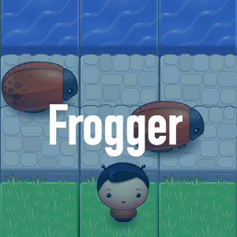
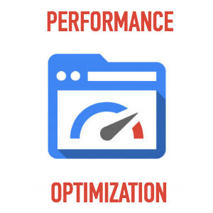

Summary
Greetings! My name is Nathan Bateman and I am a Front-End Developer with a background in education. Works I’ve completed individually, with teams, and during my certification experience are listed below. I thoroughly enjoy thinking through problems to create smooth user experiences and aspire to work in an environment where there is a clear mission for the good of all stakeholders and unto the Glory of G-d. Please have a look at my projects!


Skills
- javaScript
- ajax
- jQuery
- knockout
- bootstrap
- git
- critical-rendering path
- api integration
- object-oriented programming
- html
- css
- sass
- gulp
- chrome developer tools
- jasmine
- photoshop
- illustrator
- html5 canvas